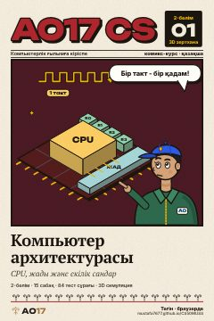

AO17 CS курсы / 2-бөлім: 3D зертхана / Компьютер архитектурасы

Компьютер архитектурасы · 15-сабақ · ≈20 мин · 2 қадам · 4 сұрақ
Көп ядро: кэш үйлесімділігі және жалған ортақтасу
Multicore: Cache Coherence & False Sharing
Екі ядро бір-біріне тиіспейтін екі санауышпен жұмыс істейді, бірақ бір ядродан 39 есе баяу. Кэш жолдары, MESI когеренттігі және padding.
1Екі ағын баяу
Идея
Кэш деректі байт бойынша емес, 64 байттық жол (cache line) бойынша тасиды. Көп ядролы процессорда әр ядроның өз кэші бар, ал когеренттік хаттамасы (MESI) бір жолды бір уақытта тек бір ядро өзгерте алатынын қамтамасыз етеді.
Ядро жолға жазғысы келсе, жол оның кэшінде «M» (Modified) күйде болуы керек. Екінші ядро сол жолға жазса, жол оған көшеді де, біріншінікі жарамсыз болады.
Жалған бөлісу (false sharing): екі ядро әртүрлі деректерге жазады, бірақ олар бір кэш жолында тұр. Логикасы бойынша ортақ ештеңе жоқ, ал аппарат үшін бұл бір жол.
Түйсік
Екі адам екі бөлек сөйлемді бір ғана дәптерге жазып отыр. Сөйлемдері бөлек, бірақ дәптер біреу: әр сөзден кейін дәптерді бір-біріне беріп отыруға тура келеді.
Есептеп көрейік
Кэштен оқу 1 такт, жолды басқа ядродан не жадтан алу 40 такт.
- 1 ағын: бір суық miss (40), сосын бәрі кэште. 40 + 1 + 999 × 2 = 2039 такт.
- 2 ағын, бір жол: әр жазу жолды көшіреді, ал ядролар бірін-бірі күтеді. 1000 × (40 + 40) = 80 000 такт: бір ағыннан 39 есе баяу.
Нақты әлемде
Бұл көп ағынды бағдарламалардың ең жасырын баяулауларының бірі: код дұрыс, деректер бөлек, ал жылдамдық құлайды. Статистика санауыштары, ағындар массивіндегі көрші элементтер, бір құрылымдағы бір-біріне тиіспейтін өрістер: бәрі тәуекел.
Енді сен
Алдымен бір ағынды іске қос. Сосын «2 ағын, бір кэш жолы» таңда да, такттарды салыстыр.
3D симуляцияда орында
- Бір ағын екі санауышты да арттырсын: 2039 такт
- Екі ағын, санауыштар бір кэш жолында: 80 000 такт, бір ағыннан баяу
Алдымен болжа
Екі ядро, әрқайсысы өз санауышын 1000 рет арттырады. Санауыштар жадта көрші (0 және 8 байт). Бір ядроның бәрін өзі жасауымен салыстырғанда қалай болады?
Жауабы мен түсіндірмесі
Дұрыс жауап: Әлдеқайда баяу: санауыштар бір кэш жолында, ал ол ядролар арасында секіреді
Деректер бөлек болса да, кэш оларды 64 байттық жолмен тасиды. Бір ядро жазғанда, жол екінші ядродан алынады: әр жазу 40 такт.
Өзіңді тексер
Неге бөлек айнымалылар бір-біріне кедергі келтірді?
Жауабы мен түсіндірмесі
Дұрыс жауап: Олар бір 64 байттық кэш жолында тұр, ал когеренттік жол бойынша жұмыс істейді
Когеренттік аппараттық деңгейде жолдарды қадағалайды, жеке айнымалыларды емес.
Ядро басқа ядро өзгерткен жолға жазғысы келсе не болады?
Жауабы мен түсіндірмесі
Дұрыс жауап: Жол оған көшеді, ал екінші ядроның көшірмесі жарамсыз болады
MESI бір жолдың өзгертілген көшірмесі бір ғана кэште болуын талап етеді. Әр көшу ондаған такт алады.
2Әрқайсысына өз жолы
Идея
Шешім: әр ағынның деректерін өз кэш жолына қою. Бұл padding не туралау (alignment):
struct Counter { long value; char pad[56]; }; // 8 + 56 = 64 байтСонда екі ядро бір-бірінің жолына тимейді.
Тағы бір шешім: әр ағын жергілікті айнымалыда санап, соңында ғана ортақ жерге бір рет қосады.
Түйсік
Екі адамға екі бөлек дәптер бер. Қағаз көбірек кетеді, бірақ ешкім күтпейді.
Есептеп көрейік
- 2 ағын, бөлек жолдар: әрқайсысына бір суық miss (40), сосын 999 × 1. Ядролар қатар жүреді: 40 + 999 = 1039 такт.
- Бір ағынмен салыстырғанда: 2039 / 1039 ≈ 2 есе жылдам.
- Жалған бөлісумен салыстырғанда: 77 есе жылдам.
Бағасы: әр санауышқа 8 емес, 64 байт.
Нақты әлемде
Java-да @Contended аннотациясы, C++17-де std::hardware_destructive_interference_size, Rust-та crossbeam-тің CachePadded түрі дәл осы үшін бар. Linux ядросындағы ядро бойынша (per-CPU) санауыштар да осы идеяға құрылған.
Енді сен
Бөлек жолдармен іске қос та, сахнадағы жолдардың түсін бірінші кезеңмен салыстыр.
3D симуляцияда орында
- Санауыштарды 64 байт алшақ қой: 1039 такт, бір ағыннан екі есе жылдам
Алдымен болжа
Санауыштардың арасына 56 байт бос орын қосып, оларды бөлек кэш жолдарына қойдық. Екі ағын енді қанша такт алады?
Жауабы мен түсіндірмесі
Дұрыс жауап: Шамамен 1000: екеуі параллель, әрқайсысы өз кэшінде
Енді әр ядро өз жолын бір рет алып, қалғанын кэштен жазады. Ядролар бірін-бірі күтпейді.
Өз сөзіңмен түсіндір
Неге екі ағын бір ағыннан 39 есе баяу болды, ал санауыштарды 64 байт алшақтатқанда екі есе жылдамдады?
Жақсы түсіндірмеде болатын ойлар
- санауыштар бір кэш жолында тұрды
- әр жазуда жол ядролар арасында көшті
- бөлек жолдарда ядролар параллель жұмыс істейді
Өзіңді тексер
Padding жалған бөлісуді қалай жояды?
Жауабы мен түсіндірмесі
Дұрыс жауап: Әр ағынның деректерін бөлек кэш жолына қояды
Жолдар бөлек болса, когеренттікке ештеңені көшірудің қажеті жоқ.
Padding-тің бағасы қандай?
Жауабы мен түсіндірмесі
Дұрыс жауап: Жад көбірек жұмсалады: 8 байттың орнына 64
Тағы да уақыт пен жадтың айырбасы. Сондықтан padding тек жиі жазылатын, ағындар арасында бөлінген деректерге қолданылады.
Сабақ AO17 командасының INSIDE TECH 3D платформасынан алынған: дәріс, тест және 3D симуляция - бір сабақтың бөліктері. Симуляция осы сайттың ішінде ашылады, прогресі «Менің шаңырағым» бетіне қосылады.